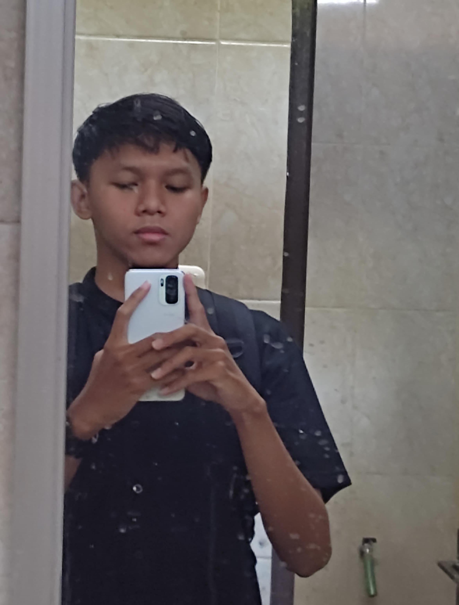

Pada website ini berisikan informasi yang menjelaskan tentang hobi dari masing masing anggota kelompok
Ryan Adib Fitra
Saya memiliki hobi berbisnis di bidang bisnis online dan hobi mempelajari bidang pemrograman, selain itu saya juga mempunyai hobi di bidang otomotif karna saya menyukai bidang otomotif sejak kecil.
Muhammad Gilang
Saya mempunyai hobi bermain game seperti valorant, mobile legends, dan saya memiliki hobi lain yaitu membaca. saya suka memebaca komik dan novel dan saya melakukan hobi tersebut pada saat senggang.

Satria Galuh Saputra
Hobi saya membaca buku apa saja dan baru² ini tertarik dengan kegiatan memancing karna memancing melatih kesabaran saya untuk mendapatkan apa yang saya capai.